Fun Fact
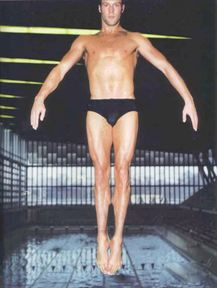
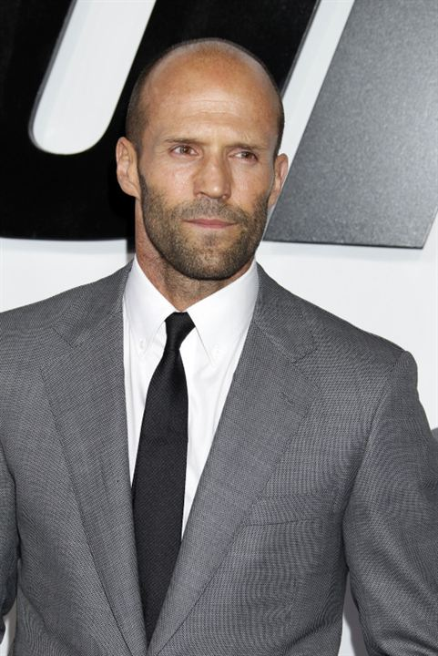
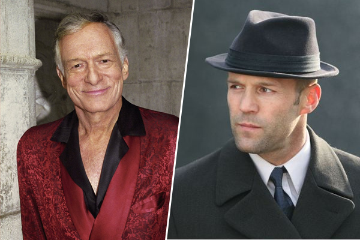
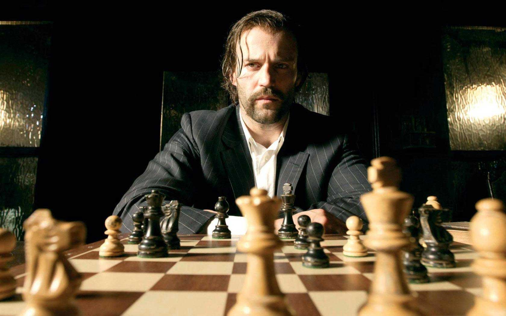
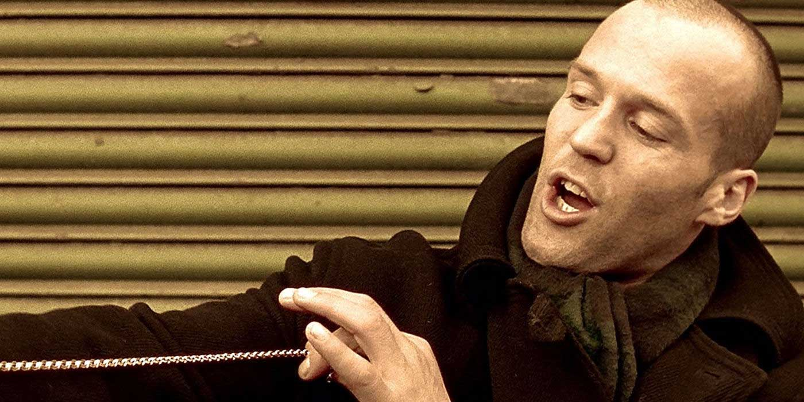
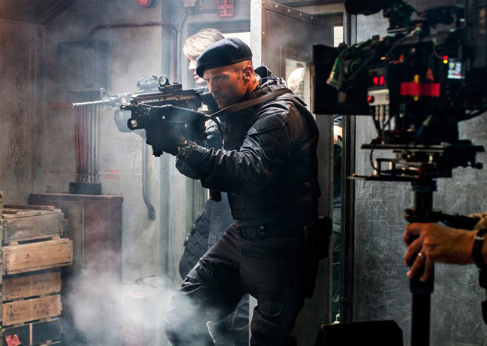
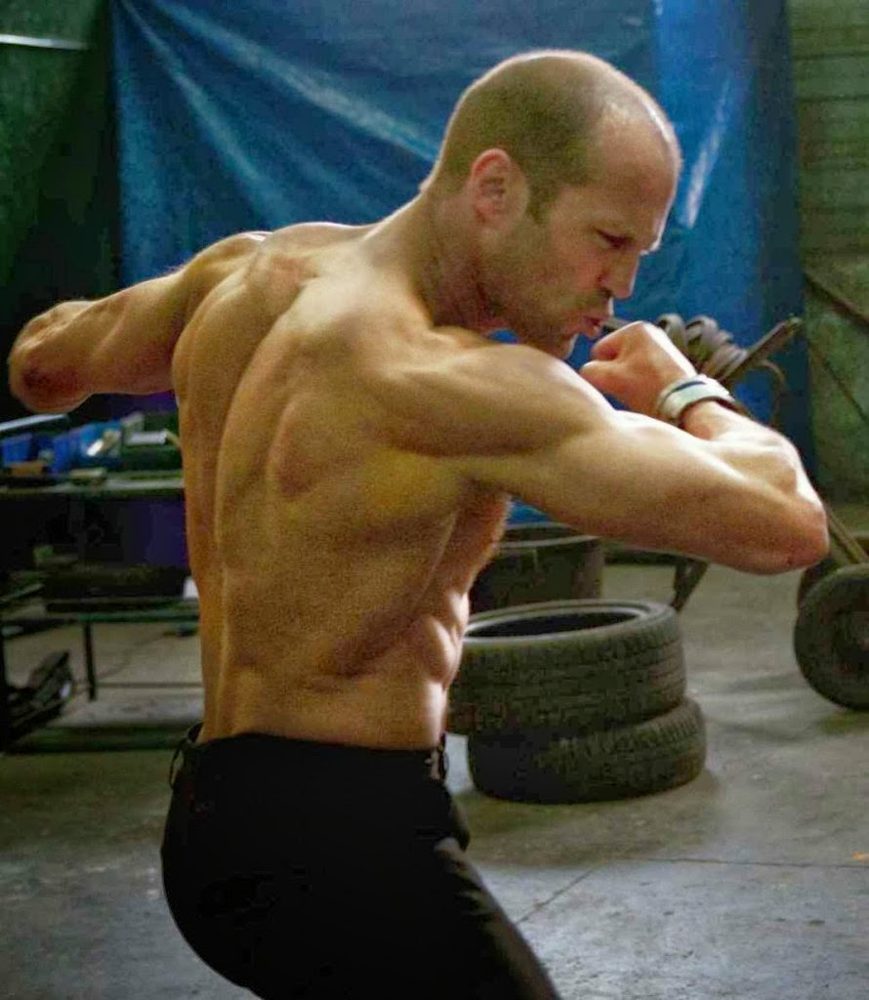
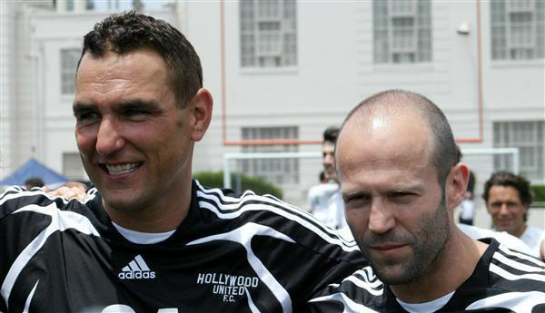
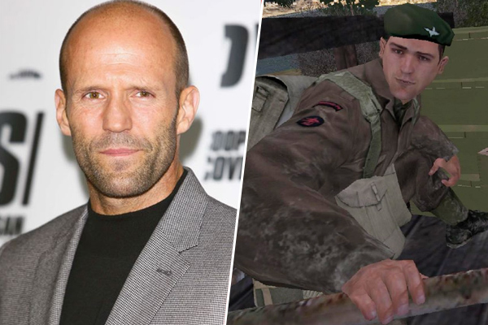
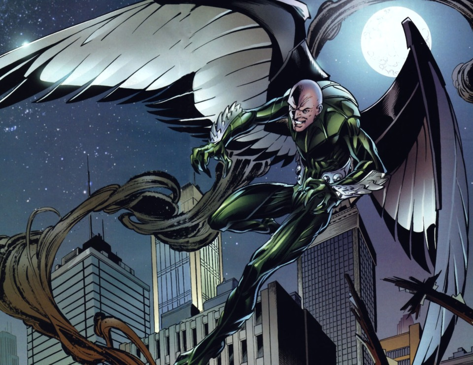
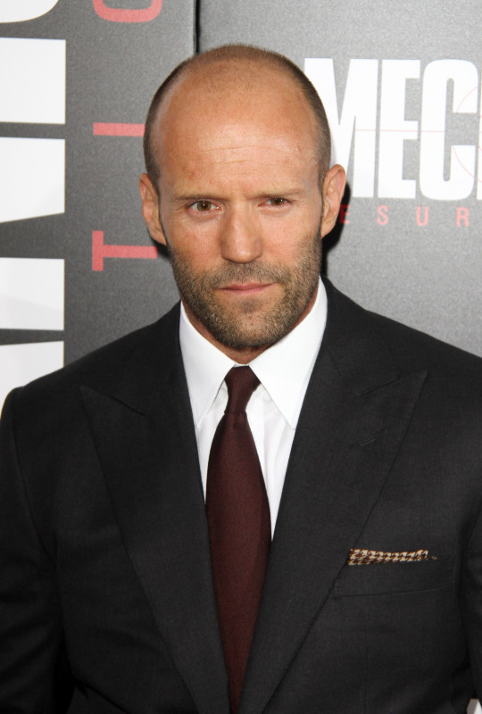
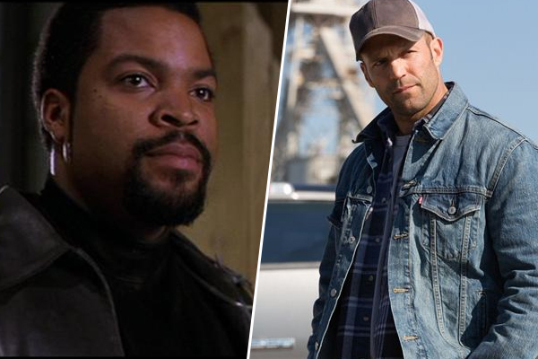
1. Statham, maître de la franchise
Maître de l'action, Jason Statham est aussi un maître de la franchise. Il est le visage de la trilogie du Transporteur et l'un des Expendables de Stallone mais l'acteur est aussi apparu dans les deux Hyper tension (en attendant le 3e volet). Il est aussi dans la franchise Fast and Furious depuis le 6e volet, et vient tout juste d'ajouter à son compteur Mechanic Résurrection, suite du film Le Flingueur, sorti en 2011.